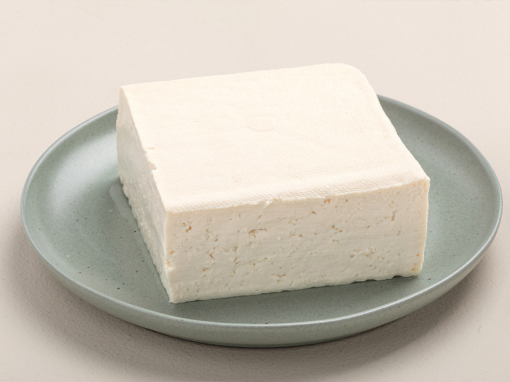
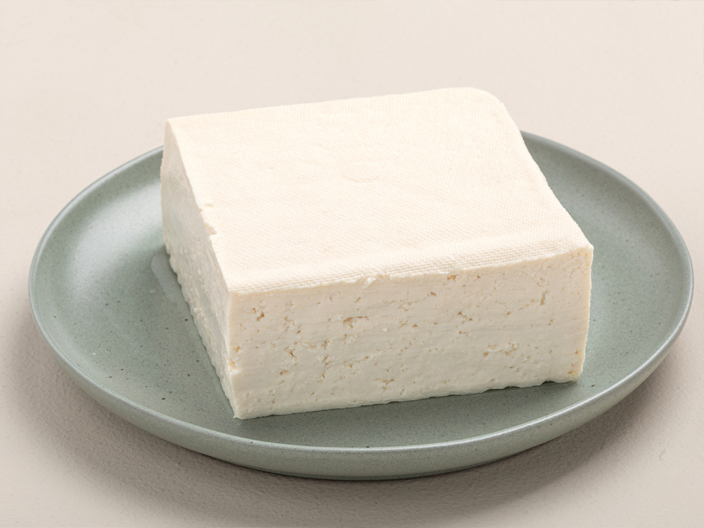

된장찌개
120,000
VND된장찌개+계란말이+김+반찬+공기밥

된장을 주재료로 끓인 대한민국 전통 국민찌개.
한식의 상징과도 같은 요리로, 한식 찌개의 중심에 해당하는 요리.
1. 애호박과 두부는 적당히 썰어서 준비해 놓는다.
2. 멸치 국물을 끓이고 된장과 고추장을 풀어준다.
3. 다 풀어지면 미리 썰어놓은 두부와 감자, 애호박을 먼저 넣는다.
4. 보글보글 끓어오르기 시작하면 다시다 1작은술, 고춧가루 1작은술, 소고기나 바지락, 풋고추 썰은 것을 넣고 끓여준다.
5. 바지락이 입을 벌리거나 소고기가 거의 다 익으면 약 3분간 더 끓여준 뒤 송송 썬 파를 올려 상에 낸다.

 
